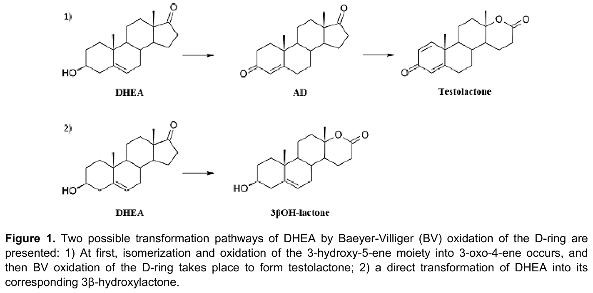

Technical Letters · TL18
Edition v1.0, 2019 (version 1.0) · effective 23 September 2019 · superseded
Retrieved on 25 November 2026 from https://www.wada-ama.org/sites/default/files/resources/files/tl18_in_situ_formation_of_testolactone.pdf
Editions: v2.0, 2021 (current) · v1.0, 2019
p. 1
IN SITU FORMATION OF TESTOLACTONE
The World Anti-Doping Agency wishes to draw the attention of the Laboratories to the following analytical issue that may affect Laboratory operations. This pertains, in particular, to the possible detection of testolactone in urine Samples resulting from in situ transformation of DHEA.
It is noted that minor metabolic pathways from less common microbial contaminations may induce modifications in the structure of the endogenous steroids. For example, filamentous fungus species are able to transform dehydroepiandrosterone (DHEA) into different derivatives by 1,2-dehydrogenation and hydroxylation at C-6 or by Baeyer-Villiger (BV) lactonization of the D-ring¹ .
Therefore, DHEA may undergo isomerization and oxidation to form androst-4-ene-3,17-dione (AD)² , which subsequently undergoes BV oxidation into testolactone (Fig 1.1). DHEA may also be transformed directly into its corresponding 3β-hydroxylactone (Fig. 1.2)¹ .

Figure 1. Two possible transformation pathways of DHEA by Baeyer-Villiger (BV) oxidation of the D-ring are presented: 1) At first, isomerization and oxidation of the 3-hydroxy-5-ene moiety into 3-oxo-4-ene occurs, and then BV oxidation of the D-ring takes place to form testolactone; 2) a direct transformation of DHEA into its corresponding 3β-hydroxylactone.
Since many microorganisms can produce an overabundance of steroid-transforming enzymes, which lead, in turn, to multiple transformations³ , it is possible that these two reactions depicted in Fig. 1 may occur simultaneously, so that the 3β-hydroxylactone, AD and testolactone are formed in a urine Sample during a microbial steroid degradation process. Thus, a urine Sample may be found to contain the prohibited aromatase inhibitor testolactone (due to the in situ biotransformation of DHEA) in the absence of its major Metabolites 4,5-dihydrotestolactone and 1,2,4,5-tetrahydrotestolactone, but in the presence of a 3β-hydroxylactone compound, which is not a testolactone Metabolite but an isobar of another testolactone Metabolite: D-homo-17α-oxa-3-hydroxy-5β-androst-1-ene-17-one⁴ .
p. 2
Laboratories should consider the following course of actions before reporting an Adverse Analytical Finding (AAF) for testolactone:
-
Perform a Confirmation Procedure using an extraction method [e.g., Solid Phase Extraction (SPE)] prior to the enzymatic hydrolysis in order to avoid inducing the in situ formation of testolactone by the enzymatic activity of microbes already present in the Sample [However, if the side products have already been formed prior to the enzymatic hydrolysis, SPE will have no impact].
-
Evaluate the overall pattern of Metabolites: at least one of these two major Metabolites, 4,5-dihydrotestolactone or 1,2,4,5-tetrahydrotestolactone, shall be confirmed.
-
It is recommended that the Laboratory seeks a second opinion, in writing, from another Laboratory before reporting the AAF. The second opinion shall be recorded in the Laboratory Documentation Package.
Should you have any further questions, please do not hesitate to contact the WADA Science Department.
REFERENCES
-
Kozłowska, E. et al. Biotranformation of dehydroepiandrosterone (DHEA) by environmental strains of filamentous fungi. RSC adv. 7(50): 31493-31501, 2017.
-
WADA Technical Letter TL18: In situ Formation of 4-Androstene-3,6,17-trione (6-oxo) and metabolites. https://www.wada-ama.org/en/what-we-do/science-medical/laboratories
-
Charney, W. et al. Microbial transformations of steroids: a handbook. Academic Press, 2014.
-
Van Eenoo, P., & Delbeke, F. T. Metabolism and excretion of anabolic steroids in doping control - new steroids and new insights. J Steroid Biochem Mol Biol, 101(4-5), 161-178, 2006.
Retrieved on 25 November 2026 from https://www.wada-ama.org/sites/default/files/resources/files/tl18_in_situ_formation_of_testolactone.pdf